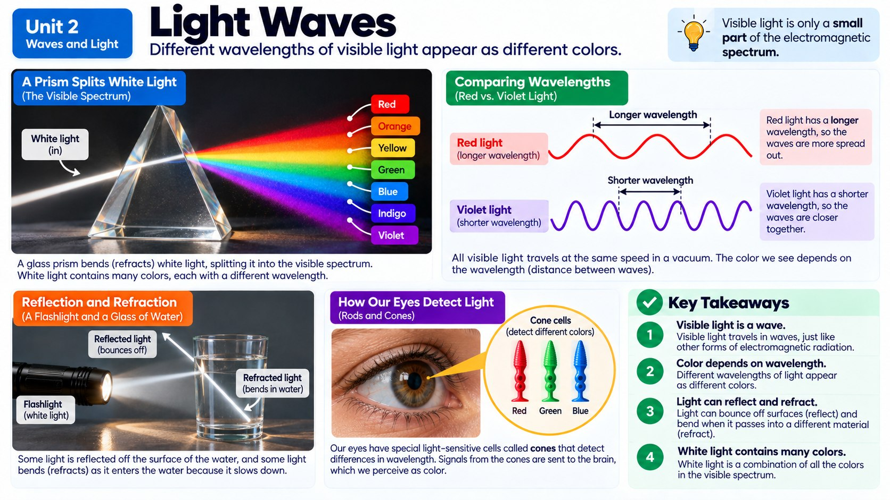

Light can bounce off a mirror, bend as it enters water, and travel from the Sun across empty space to reach your skin, so how is light different from every other wave you've studied, and why does that difference matter?

Light Behaves Like a Wave, With One Big Twist
Light bounces, bends, and can be blocked or absorbed just like the mechanical waves you explored with springs and ripple tanks. Shine a flashlight at a mirror and it reflects straight back at you, following the exact same rules of reflection as a wave bouncing off the edge of a ripple tank. Shine it through a glass of water and you'll see it refract, bending as it crosses from air into water because light slows down when it enters a denser material.
But light has one enormous difference from sound: it doesn't need a medium at all. Sound needs air, water, or a solid to travel through, which is why there's no sound in the vacuum of space. Light, however, is an electromagnetic wave: a wave made of vibrating electric and magnetic fields, not vibrating matter, so it travels just fine through the emptiness of space. That's exactly how sunlight crosses 93 million miles of empty space to warm your face.
So why does light slow down at all when it enters a denser material like water or glass? Light travels fastest in the emptiness of a vacuum, at an incredible 300,000 kilometers per second. But glass, water, and even air are packed with atoms, and every time a light wave reaches one of those atoms, it gets absorbed for an instant and then re-emitted, over and over, all the way through the material. Each of those tiny absorb-and-re-emit steps takes a fraction of a second, and all those fractions add up, so the light effectively slows down the deeper it has to travel through matter. That tiny slowdown at the boundary between two materials is exactly what causes the bending you see when a straw appears to break at the water's surface: the part of the light wave that enters the water first slows down before the rest of the wave does, which swings the whole wave's direction just like a shopping cart pulling to one side when one wheel sticks in the mud.
Absorption, Reflection, and Refraction in Everyday Materials
What happens when light hits an object depends on both the frequency of the light and the material it hits. A red shirt looks red because the fabric absorbs every color of light except red, which it reflects back to your eyes. A clear glass window lets most light pass straight through (transmission), while a mirror is built to reflect almost all of it. Black pavement gets scorching hot on a sunny day because dark materials absorb most light energy and convert it into heat instead of reflecting or transmitting it.
Engineers exploit these behaviors on purpose. Sunglasses use tinted materials that absorb certain frequencies of light to protect your eyes. Camera and eyeglass lenses are precisely curved pieces of glass that refract light in controlled ways to focus an image. Mirrors are coated with reflective metal to bounce nearly all light back. Even soundproofing foam in a recording studio is chosen because its bumpy shape and soft material absorb sound waves instead of reflecting them around the room, showing that the same principles (reflection, absorption, and transmission) apply across totally different types of waves.
One Rainbow, One Giant Spectrum
When white light passes through a prism, it splits into a rainbow of colors: red, orange, yellow, green, blue, indigo, and violet. Each color you see is really just visible light at a different frequency and wavelength: red has the longest wavelength and lowest frequency of visible light, while violet has the shortest wavelength and highest frequency. But that rainbow is only a tiny sliver of something much bigger: the electromagnetic spectrum.
The electromagnetic spectrum includes every type of electromagnetic wave, from radio waves with wavelengths longer than a football field, through microwaves, infrared, visible light, ultraviolet, and all the way to X-rays and gamma rays with wavelengths smaller than an atom. Every single one of these is fundamentally the same kind of wave as visible light, just at a different frequency. Higher-frequency EM waves carry more energy, which is why X-rays can pass through soft tissue to photograph your bones, while low-frequency radio waves can safely pass through walls carrying nothing more than a Wi-Fi signal.
Society uses different parts of this spectrum constantly: microwave ovens vibrate water molecules in food to cook it, infrared cameras detect body heat in the dark, ultraviolet light disinfects water and hospital equipment, and radio waves broadcast everything from music stations to the signal your phone uses to make a call. You're surrounded by invisible waves nearly every moment of your life.
There's one more twist worth knowing: mixing colors of light works differently than mixing colors of paint. Combine red, green, and blue light together at full brightness and you get white light: that's called additive color mixing, and it's exactly how the screen you're reading this on works, with tiny red, green, and blue lights combining to create every color you see. Mixing paint, however, works by subtraction: each paint color absorbs certain wavelengths and reflects the rest, so mixing paints together removes more and more wavelengths of light until you're left with a muddy brown or black instead of white. Next time you look closely at a phone or TV screen, or use a magnifying glass on one, you can actually see the individual red, green, and blue lights working together to build the whole picture.
Why Is the Sky Blue and Sunsets Red?
Here's a mystery you've probably never thought to ask about: why is the sky blue during the day, but the Sun turns red at sunset? Both are explained by a phenomenon called scattering, which happens when light waves bounce off tiny particles and molecules in Earth's atmosphere, mostly nitrogen and oxygen molecules, far smaller than the wavelength of visible light itself.
Blue and violet light have shorter wavelengths and higher frequencies than red and orange light, and it turns out that shorter wavelengths scatter far more easily off small molecules than longer wavelengths do. During the middle of the day, when sunlight has a short, direct path through the atmosphere to your eyes, blue light gets scattered in every direction across the entire sky, so no matter where you look, some scattered blue light reaches your eyes. That's why the sky looks blue instead of black, even though sunlight itself is actually a mix of every visible color.
At sunset, the story changes because the Sun sits low on the horizon, so its light has to travel through a much longer stretch of atmosphere to reach your eyes. Nearly all the blue light gets scattered away long before it arrives, leaving mostly the longer-wavelength red and orange light to make it through directly. That's exactly why sunsets glow red, pink, and orange instead of blue.
This same scattering principle explains other everyday sights too: clouds look white because water droplets are big enough to scatter every color of light equally, and the ocean can look a deeper blue on a clear day partly because of how sunlight scatters off water molecules and tiny particles suspended in it. A sight you see nearly every single day, fully explained by nothing more than how differently colored light waves interact with tiny particles in the air.
Why Objects Have the Colors They Do
Here is a question that sounds childish and turns out to be sharp: why is grass green? Not "because it has chlorophyll," but what is physically happening with the light. When a mixture of light waves lands on something that is not transparent, the object absorbs some of those waves and reflects the rest. The color you see is simply whichever waves bounced back to your eye.
So a rose looks red because it absorbs nearly every wavelength striking it and reflects the red ones. A pair of socks looks blue because it reflects blue and swallows the rest. Push that logic to its ends and two familiar cases fall out: an object that reflects all the light waves hitting it looks white, and an object that reflects almost none of them looks black. Black is not a color being sent to your eye. It is the near absence of any light coming back.
This also explains a trick that startles people the first time they see it. Photograph those blue socks under a red filter, which only lets red light through, and the socks go black. There is no blue light in the room for them to reflect, and blue socks absorb red, so nothing comes back at all. An object's color is not a fixed property it owns; it is a conversation between the object and whatever light happens to be available.
One more surprise: although people can distinguish thousands of colors, nearly all of them can be produced by mixing just three. Red, green, and blue are the primary colors of light. Overlap red and green light and you get yellow; overlap all three and you get white. This is exactly how the screen you are reading on works. Look very closely at a phone display and you will find only red, green, and blue dots, mixing in different amounts to fake every other color your eye reports.
The Law of Reflection
You can see your face in a still pond but not in a choppy one, and you can see it in polished metal but not in a sheet of paper. Both facts come from one rule plus one detail about surfaces.
The rule is the law of reflection. Imagine a line drawn straight out from the surface at the exact point the light hits, perpendicular to it. Scientists call that line the normal, the same word you met describing the normal force back in Unit 1. The incoming ray makes an angle with the normal called the angle of incidence, and the bounced ray makes an angle called the angle of reflection. The law says those two angles are always equal, on any surface, made of any material, every time.
The detail is smoothness. On a mirror or still water, the surface is so flat that every parallel ray arriving hits at the same angle and leaves at the same angle, so the rays stay organized and your eye reassembles them into a sharp image. On paper, or on a rippled pond, the surface is rough at a small scale, so neighboring rays strike little slopes tilted every which way. Each ray still obeys the law perfectly, but they scatter off in all directions and no image survives. Nothing about the physics changed between the mirror and the paper. Only the geometry of the surface did.
Real-World Connections
Polarized Sunglasses
Polarized sunglasses block certain light waves reflecting off flat surfaces like water or roads, cutting down glare using the same reflection ideas used to describe how light interacts with materials.
Studying Starlight
Scientists can determine what a distant star is made of just by studying the specific colors of light it gives off, without ever traveling anywhere near it.
Meet the Scientist
Astronomers
Astronomers use instruments called spectrographs to split starlight into its individual wavelengths, similar to how a prism creates a rainbow. The exact pattern of colors present or missing tells them what elements a star or planet's atmosphere contains, letting scientists study objects trillions of miles away without ever touchingthem.
Key Vocabulary
Bold, underlined words in the reading above are clickable too. Tap one to see its definition pop out. Or click or tap a card below to reveal the definition.
Explore More
Chapter Review
1. Why can sunlight reach Earth through the vacuum of space, but sound cannot?
2. A red shirt appears red in sunlight because the fabric mostly:
3. Which part of the electromagnetic spectrum has the shortest wavelength and highest energy?
4. Why does a straw appear to bend where it enters a glass of water?
5. A mirror and a pair of sunglasses handle light very differently on purpose. What is happening?
Design the Experiment
California Science Test (CAST) Practice
Light travels at about 300,000 kilometers per second in a vacuum, but it slows down by different amounts depending on the material it enters. A student looked up the approximate speed of light in four common materials, shown in the table below.
| Material | Speed of Light (km/s) |
|---|---|
| Air | 299700 |
| Water | 225000 |
| Glass | 200000 |
| Diamond | 124000 |
Light traveling through air strikes each of these materials at an angle. Based on the data, entering which material would cause the light to refract, or bend, the most?